무선설비기사 (2007-03-04 기출문제)
1과목: 디지털 전자회로
1. ECL(Emitter Coupled Logic) 회로의 설명으로 틀린 것은?
- 회로의 출력은 각각 OR, NAND 출력이 된다.
- TTL에 비해 동작속도가 일반적으로 빠르다.
- TTL에 비해 소비전력이 일반적으로 크다.
- 기본회로의 구성은 차동증폭기로 이루어진다.
(정답률: 알수없음)

2. 10진수 4에 해당하는 그레이코드(gray code)는 얼마인가?
- 0100
- 0111
- 1000
- 0110
(정답률: 알수없음)
3. 다음 중 NOR 게이트로 구성된 R-S 플립플롭에 대한 설명으로 틀린 것은?
- S=R=0 이면 상태 변화가 없고 처음의 상태를 유지한다.
- S=0, R=1 일 때, Qn=0이면 변화가 없고 Qn=1이면 Qn+1=0으로 된다.
- S=1, R=1 일 때, Qn=0이면 Qn+1=1로 되고 Qn+1이면 변화가 없다.
- S=1, R=0일 때, Qn=0이면 1로 되고 Qn+1이면 Qn+1은 변화가 없다.
(정답률: 알수없음)
4. 부궤환 증폭회로에서 대역폭이 3배로 넓어지면 이득은 어떻게 되는가?
- 1/3로 줄어든다.
- √3배로 늘어난다.
- 3배로 늘어난다.
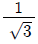
로 줄어든다.
(정답률: 알수없음)
5. 다음 중 카르노도를 간략화한 논리식은?
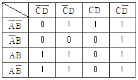
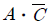
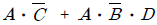
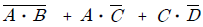
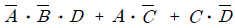
(정답률: 알수없음)
6. 다음 중 연산증폭기를 사용한 아날로그 계산기에서 미분기보다 적분기를 주로 사용하는 가장 큰 이유는?
- 적분기의 회로가 간단하기 때문이다.
- 적분기는 비선형이기 때문이다.
- 적분기의 계산속도가 빠르기 때문이다.
- 적분기의 잡음특성이 좋기 때문이다.
(정답률: 알수없음)
7. 다음 중 B급 푸시풀(push-pull) 증폭기의 특성과 가장 밀접한 것은?
- 하울링(howling)
- 험(hum)
- 크로스오버(crossover) 왜곡
- 기생진동(parasitic oscillation)
(정답률: 알수없음)
8. 차동증폭기에서 차동신호에 대한 전압이득은 Ad 이고 동상 신호에 대한 전압이득은 Ac 이다. 이 때 동상신호 제거비(CMRR)를 옳게 나타낸 것은?
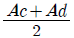
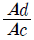
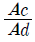
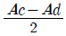
(정답률: 알수없음)
9. 다음 논리회로와 같은 게이트(Gate) 회로에 해당되는 것은? (단, A, B는 입력단자 X는 출력단자이다.)
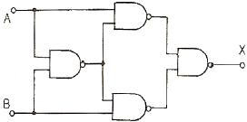
- AND
- NOR
- OR
- Exclusive OR
(정답률: 알수없음)
10. 다음 회로와 같은 동작 기능을 갖는 플립플롭은? (단, 회로에서 접지는 생략되어 있음)
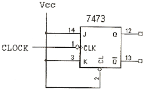
- SR
- JK
- T
- D
(정답률: 알수없음)
11. 다음 중 수신기에서 포스터-실리형 검파기와 관련 있는 것은?
- AM(진폭변조)
- FM(주파수변조)
- DM(델타변조)
- PCM(펄스부호변조)
(정답률: 알수없음)
12. 다음 중 다양한 논리 시스템을 설계할 수 있는 범용 논리게이트(universal gate)에 해당하는 것은?
- AND 게이트
- OR 게이트
- NOR 게이트
- Exclusive OR 게이트
(정답률: 알수없음)
13. 다음 논리식 중 등식이 성립되지 않는 것은?
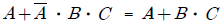
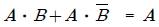
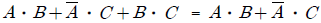
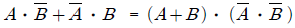
(정답률: 알수없음)
14. 출력이 140W 되는 반송파를 단일 주파수로 30% 변조하였을 때 AM 상측파의 전력은 몇 W 인가?
- 3.15
- 6.34
- 73.15
- 146.3
(정답률: 알수없음)
15. 그림과 같은 증폭회로의 이미터와 접지사이에 저항 Re를 삽입할 경우 이에 대한 설명으로 옳은 것은? (단, TR은 NPN형)
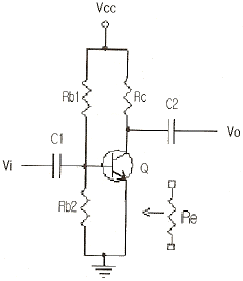
- 출력임피던스는 감소한다.
- 이득이 증가하고 일그러짐이 커진다.
- 입력임피던스와 이득이 모두 감소한다.
- 입력임피던스와 출력임피던스가 모두 커진다.
(정답률: 알수없음)
16. 그림과 같은 기본 발진회로에서 증폭기 A의 전압이득이 50 일 때, 귀환회로 β의 크기는 얼마인가?
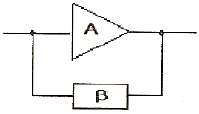
- 0.01
- 0.02
- 0.⑤
- 0.1
(정답률: 알수없음)
17. 다음 회로의 입력에 정현파가 인가될 경우 이 회로의 설명으로 옳은 것은?
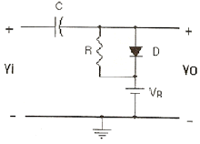
- 클램프회로이다.
- 출력신호의 하단레벨을 일정하게 유지한다.
- 반파정류회로이다.
- 클리퍼회로이며 출력신호의 크기를 제한한다.
(정답률: 알수없음)
18. 그림과 같은 회로에서 출력측에 정전압을 유지할 수 있는 입력전압(Vi)의 범위는 몇 V 인가? (단, 제너 다이오드는 20V 용이고, 최대전류는 50mA)
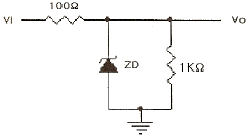
- 15~20
- 22~27
- 28~32
- 35~40
(정답률: 알수없음)
19. 중심 주파수가 455kHz이고 대역폭이 8kHz가 되는 단동조 회로가 있다 이 회로의 Q는 약 얼마인가?
- 14
- 26
- 29
- 57
(정답률: 알수없음)
20. 회로에서 C에 해당하는 커패시터를 제거할 경우 이에 대한 설명으로 옳은 것은? (단, TR은 NPN형)
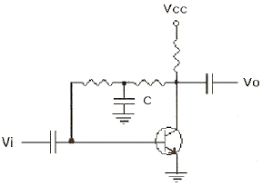
- 이득이 증가한다.
- 이득이 감소한다.
- 이득의 변동은 없다.
- 회로가 발진한다.
(정답률: 알수없음)
2과목: 무선통신 기기
21. AM 수신기에서 중간 주파수의 선정시 고려사항으로 관계가 적은 것은?
- 이득 및 안정도
- 지연특성
- 인입현상
- 초고주파의 방해
(정답률: 알수없음)
22. 무선송신기에서 발생하는 고조파의 방지대책 중 잘못된것은?
- 출력결합단에 π형 결합기를 사용한다.
- 푸시풀 증폭기를 사용한다.
- 동조회로의 Q를 될 수 있는 한 작게 한다.
- 급전선에 트랩을 설치한다.
(정답률: 알수없음)
23. 다음 ( )의 내용으로 옳은 것은?
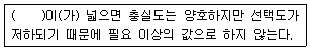
- 결합도
- 변조율
- 대역폭
- 진폭
(정답률: 알수없음)
24. AM 통신방식과 비교한 FM 통신방식의 특징 중 틀린 것은?
- 신호대잡음비가 개선된다.
- 수신 입력 레벨 변동의 영향이 적다.
- 수신신호가 매우 낮은 통신에 적합하다.
- 넓은 점유주파수 대역폭이 요구된다.
(정답률: 알수없음)
25. 자동잡음 억제회로(ANL)는 다음 중 어느 잡음에 대하여 억제효과가 있는가?
- 백색 잡음
- 필터 잡음
- 충격성 잡음
- Gauss 잡음
(정답률: 알수없음)
26. 155.520 Mbps 대지털 신호를 64 QAM 변조방식을 사용하여 30 MHz 대역폭으로 전송하였다면 주파수 이용율은 약 얼마인가?
- 2.43 bps/Hz
- 4.65 bps/Hz
- 5.18 bps/Hz
- 6.78 bps/Hz
(정답률: 알수없음)
27. DBS에 대한 설명 중 틀린 것은?
- 방송 위성은 정지궤도 위성을 이용한다.
- 한 개의 위성으로 한반도 전체를 서비스 할 수 있다.
- Up-link 주파수 대역은 4GHz 이다.
- 가정에서는 소형 파라보라 안테나를 사용한다.
(정답률: 알수없음)
28. SAW 필터의 장점이 아닌 것은?
- 우수한 주파수특성과 위상특성
- 저삽입손실
- 고신뢰성
- 우수한 LPF 특성
(정답률: 알수없음)
29. 부동 충전 방식의 특징이 아닌 것은?
- 전압 변동률이 감소한다.
- 맥동률이 증가한다.
- 효율이 증가한다.
- 전지의 수명이 연장된다.
(정답률: 알수없음)
30. 출력 임피던스 2000Ω에 정합된 수신기에서 50mW의 전력을 측정하였다. 이 경우 출력 전압은 몇 V 인가?
- 5
- 10
- 15
- 20
(정답률: 알수없음)
31. 위성지구국 시스템은 신호를 지구국 안테나에서 위성으로 Up-link 시키거나 혹은 위성에서 Down-link 신호를 분리하는 기능을 하는 장치는?
- 디멀티플렉서(Demultiplexer)
- 다운 컨버터(Down converter)
- 다이플렉서(Diplexer)
- 멀티플렉서(Multiplexer)
(정답률: 알수없음)
32. 다음 그림은 직접확산(DS) 방식의 송신기 구성도이다. A에 알맞은 것은?
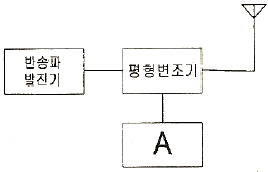
- 고주파 믹서
- PSK 변조기
- 중간주파 발진기
- 의사잡음(PN) 발생기
(정답률: 알수없음)
33. 피변조 출력 전력이 30kW, 변조도가 60%인 무선송신기의 반송파 전력은 약 몇 kW 인가?
- 24.4
- 25.4
- 48.8
- 50.8
(정답률: 알수없음)
34. 볼로미터(Blometer)의 소자로 바레터와 서미스터가 있는 데 이들의 특성 비교 중 틀린 것은?
- 바레터는 저항온도계수가 정이고 서미스터는 저항온도계수가 부이다.
- 사용온도는 서미스터보다 바레터가 더 높다.
- 감도는 서미스터 보다 바레터가 더 우수하다.
- 사용재료가 서미스터는 반도체이고 바레터는 금속이다.
(정답률: 알수없음)
35. 수신기의 감도를 나타내는 방법 중 잡음억압방식에 관한 설명으로 옳지 않은 것은?
- FM 수신기의 감도를 나타내는데 사용한다.
- 측정할 때는 무변조 반송파만을 사용한다.
- 감도는 잡음이 20dB 억압되는 수신기 입력을 말한다.
- 스켈치는 ON 상태로 측정한다.
(정답률: 알수없음)
36. 수신기의 고주파증폭부의 역할로 적절치 않는 것은?
- 영상주파수 선택도의 개선
- 공중선회로와 정합이 용이
- 불요전파 복사의 촉진
- 감도의 향상
(정답률: 알수없음)
37. 무선송신기의 송신주파수 변동을 줄이기 위한 대책이 아닌 것은?
- 발진기와 출력단 사이에 완충증폭기를 넣는다.
- 발진기의 코일과 콘덴서의 온도계수를 상쇄하도록 부품을 선택한다.
- 전원의 안정도를 높인다.
- 발진기의 동조회로에 Q가 낮은 부품을 선택한다.
(정답률: 알수없음)
38. C급 전력증폭기의 공진회로 Q가 무부하시에 200, 부하시에 20일 때 이 공진회로의 효율은 몇 % 인가?
- 60
- 70
- 80
- 90
(정답률: 알수없음)
39. 전파 정류회로에서 정류 효율은 반파 정류회로의 몇 배까지 얻어질 수 있는가?
- 1
- 1.5
- 2
- 4
(정답률: 알수없음)
40. 위성통신에서 다원접속방식 중 위성의 주파수 대역을 분할하여 각 지구국에 할당하는 방식은?
- SDMA
- FDMA
- TDMA
- CDMA
(정답률: 알수없음)
3과목: 안테나 공학
41. 빔(beam) 안테나의 특성에 관한 설명 중 틀린 것은?
- 이득이 크고 지향성이 예리하다.
- 큰 복사전력을 얻을 수 있다.
- 주파수 이용도가 중파로 제한되어 있다.
- 공전 및 인공잡음의 방해를 경감할 수 있다.
(정답률: 알수없음)
42. 정재파에 대한 설명 중 틀린 것은?
- 진행파와 반사파가 합성된 파를 말한다.
- 전압 분포 상태가
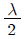
거리마다 최대치가 있다. - 전압ㆍ전류의 위상은 선로 각 점에 따라 위상이 서로 다르다.
- 진행파와 비교할 때 전송 손실이 크다.
(정답률: 알수없음)
43. 미소 다이폴로부터 복사되는 전계의 세기는?
- 파장에 반비례하고 거리에 비례하는 크기를 갖는다.
- 파장에 비례하고 거리에 반비례하는 크기를 갖는다.
- 파장과 거리에 비례하는 크기를 갖는다.
- 파장과 거리에 반비례하는 크기를 갖는다.
(정답률: 알수없음)
44. 2점간 원거리 통신용으로 가장 적합한 안테나는?
- Helical 안테나
- Turnstile 안테나
- Rhombic 안테나
- Loop 안테나
(정답률: 알수없음)
45. Folded Antenna를 만들 때 일반적으로 n(소자수)개로 접으면 급전점 인피던스는 몇 배로 증가하는가?
- n2
- n
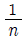
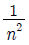
(정답률: 알수없음)
46. 대양의 폭발에 의해 방출된 자외선이 E층 또는 D층의 전자밀도를 증가시켜 통신을 불가능하게 만드는 현상은?
- 델린저 현상
- 대척점 효과
- 룩셈부르크 현상
- 페이딩 현상
(정답률: 알수없음)
47. 다음 중 지표파의 진행에 가장 손실이 적은 지역은?
- 해면
- 시가지
- 산악지역
- 사막지대
(정답률: 알수없음)
48. 전파가 전리층에서 받는 제2종 감쇠의 설명 중 가장 타당한 것은?
- E층 또는 F층을 투과할 때 받는 감쇠를 말한다.
- D층을 투과할 때 받는 감쇠를 말한다.
- E층 또는 F층에서 반사할 때 받는 감쇠를 말한다.
- D층에서 반사할 때 받는 감쇠를 말한다.
(정답률: 알수없음)
49. 전리층 F층의 임계 주파수를 f0 = 20MHz 라 하고 입사각 60도로 입사시킬 때 최적운용 주파수 FOT는 몇 MHz인가?
- 21
- 24
- 31
- 34
(정답률: 알수없음)
50. 전자계 현상에 관한 설명 중 틀린 것은?
- 유전율이 커지면 파장이 길어진다.
- 전계 벡터가 X축과 Y축으로 구성되어 크기가 같은 경우를 원형 편파라고 한다.
- 복사 전계의 크기는 거리에 반비례한다.
- 전파의 주파수가 높을수록 직진성이 강하다.
(정답률: 알수없음)
51. 사용주파수가 20MHz이고, 복사저항이 73.13Ω인 반파장 다이폴 안테나의 실효길이는 약 몇 m인가?
- 2.4
- 3.6
- 4.8
- 5.2
(정답률: 알수없음)
52. 송수신국 A, B가 있다. A국의 안테나 높이는 해발 980m이고, B국의 높이는 420m일 때 직접파가 전달될 수 있는 거리는 대략 얼마인가?
- 185km
- 213km
- 283km
- 385km
(정답률: 알수없음)
53. 안테나의 급전점 임피던스가 75Ω인 반파장 안테나와 특성임피던스가 600Ω인 선로를 λ/4 임피던스 변환기로 정합시키고자 할 때 변환기의 임피던스는 약 몇 Ω 인가?
- 110
- 210
- 310
- 410
(정답률: 알수없음)
54. 정관형 안테나에 관한 설명 중 틀린 것은?
- 전리층 반사를 적게 하여 양청구역을 넓힐 수 있다.
- λ/4 수직접지 안테나에 원정관을 설치한다.
- 고유파장을 길게 할 수 있다.
- 실효고의 감소효과를 갖는다.
(정답률: 알수없음)
55. 다음 중 슈퍼-턴 스타일 안테나(Super-turn style antenna)의 특성을 나타낸 것으로 가장 타당한 것은?
- 반사기를 많이 사용하므로 지향성이 예민하다.
- 주파수 특성을 광대역으로 하고자 박쥐날개 모양(bat wing)으로 만든다.
- 방송국으로부터 양청거리(양청구역)를 넓히고자 원정관 (top loading)을 쓴다.
- 이 안테나를 구성하는 각 소자에는 동상의 전류로 하기 때문에 공중선 이득이 매우 적다.
(정답률: 알수없음)
56. Smith Chart를 사용하여 구할 수 없는 것은?
- 실효전력
- 반사계수
- 전압정재파비
- 정규화 임피던스
(정답률: 알수없음)
57. 50Ω의 저항이 25Ω인 부하로 종단되었다면 이점에서의 정재파비는?
- 3
- 2.5
- 2
- 1.25
(정답률: 알수없음)
58. 다음 중 미소 다이폴의 복사저항 값은?
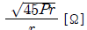
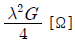
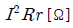
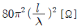
(정답률: 알수없음)
59. 자유 공간에 놓인 반파장 다이폴 안테나의 중앙부 전류가 2A인 경우 이 안테나의 축과 직각방향으로 20km 떨어진 지점에서의 전계강도는 몇 mV/m 인가? (단, 안테나에서의 손실은 무시한다)
- 2
- 3
- 6
- 9
(정답률: 알수없음)
60. 루프 안테나를 방향 탐지용으로 사용하려고 할 때 수직 안테나의 출력과 루프 안테나의 출력을 합산한 것을 동시에 받아들이고 있는 이유로서 가장 타당한 것은?
- 측정의 정밀도 및 해상도를 향상시키기 위해
- 수직 안테나에 의한 실효고를 높이기 위해
- 루프 안테나의 실효고는 수직부보다 길어야 하므로 이를 수직부와 비교하기 위해
- 전파의 도래 방향 중 루프 안테나만으로서는 전후 방향의 식별이 안되기 때문에 이를 해소하기 위해
(정답률: 알수없음)
4과목: 무선통신 시스템
61. 마이크로웨이브 다중통신 방식에서 무급전 중계 방식의 설명 중 잘못된 것은?
- 마이크로웨이브의 직진성을 이용한다.
- 금속 반사판이나 안테나에 의해서 그 진행로를 변화시킨다.
- 중계용 전력을 필요로 한다.
- 비교적 근거리의 송ㆍ수신국 사이에 산과 같은 장애물이 있을 때 사용한다.
(정답률: 알수없음)
62. 무선 디지털통신시스템에 대한 설명 중 가장 적합하지 않은 것은?
- 전송속도가 고속화될수록 필요한 대역폭을 좁힐 수 있다.
- 동기화가 필요하다.
- 암호화가 용이하다.
- 오류의 검출이 용이하다.
(정답률: 알수없음)
63. 다음의 마이크로웨이브 중계방식 중 펄스(PCM) 통신시 S/N 비가 가장 좋은 중계방식은?
- 검파 중계방식
- 헤테로다인 중계방식
- 직접 중계방식
- 무급전 중계방식
(정답률: 알수없음)
64. CDMA 다원접속 통신방식의 장점과 관련 없는 것은?
- 가입자의 수용용량이 매우 높다.
- 인접채널의 간섭이나 페이딩 등의 영향에 강하다.
- 암호화가 용이하며 데이터의 보안성이 좋다.
- 협대역의 주파수 대역폭을 필요로 한다.
(정답률: 알수없음)
65. PCM 전송로이 신호 입력단에 대역통과 필터가 없다면 어떤 현상이 일어나는가?
- 원신호의 전력 스펙트럼을 완전히 전송할 수 있다.
- 왜율이 적은 이상적인 전송로를 구성할 수 있다.
- 음성신호와 영상신호를 양호하게 전송할 수 있다.
- 신호대역(300~3400Hz) 외의 전력성분이 잡음화되어 전송 된다.
(정답률: 알수없음)
66. 무선통신 시스템 계획시 종합신뢰도의 설계에서 고려할 사항이 아닌 것은?
- MTBF
- MTTR
- TWTA
- REDUNDANCY
(정답률: 알수없음)
67. 양측파대(DSB) 전송방식과 비교하여 단측파대(SSB) 전송 방식의 장점이 아닌 것은?
- 선택성 페이딩의 영향이 적다.
- 신호대잡음비(S/N)가 개선된다.
- 송수신기의 회로구성이 간단해진다.
- 점유주파수 대역폭이 1/2로 축소된다.
(정답률: 알수없음)
68. 지상의 위성통신지구국용 통신장치가 아닌 것은?
- 송수신장치
- 위성추적장치
- 중계기장치
- 안테나 구동제어장치
(정답률: 알수없음)
69. 디지털 변조 방식의 통신시스템에서 BPSK 방식과 DQPSK 방식의 오류확률이 같을 경우 옳은 것은?
- DQPSK 방식의 Eb/No 값이 BPSK 방식보다 증가한다.
- DQPSK 방식의 Eb/No 값이 BPSK 방식과 같다.
- DQPSK 방식의 Eb/No 값이 BPSK 방식보다 감소한다.
- DQPSK 방식의 Eb/No 값이 BPSK 방식보다 크게 감소하다가 증가한다.
(정답률: 알수없음)
70. 마이크로웨이브 통신망으로 치국계획을 수립할 때 고려사항으로 가장 거리가 먼 것은?
- 총 결로손실
- 통신망의 성능
- 전력 소모율
- 총 장비이득
(정답률: 알수없음)
71. 무선통신에서 공전잡음의 경감대책이 아닌 것은?
- 지향성이 높은 안테나를 사용한다.
- 접지 안테나를 사용한다.
- 송신출력을 증대시켜 수신점의 S/N 비를 크게 한다.
- 수신기의 선택도를 높인다.
(정답률: 알수없음)
72. 위성통신 지구국에 관련된 설명 중 가장 거리가 먼 것은?
- HPA(High Power Amp)는 송신과 관련 있는 장치이다.
- DSI(Digital Speech Interpolation) 장치는 회선 용량을 증대시키는 효과가 있다.
- TDMA는 FH(Frequency Hopping) 스펙트럼 방식으로 실현하고 있다.
- CDMA는 PN(Pseudo Noise) code에 의해 신호를 전송하므로 전송시간에 유연성을 준다.
(정답률: 알수없음)
73. 다음 중 위성통신의 장점이 아닌 것은?
- 고속광대역의 통신 가능
- 넓은 범위의 지역에서 통신 가능
- 전송 지연시간이 없음
- 다원접속이 가능
(정답률: 알수없음)
74. 이동통신의 다원접속 방식 중 채널당 사용 대역폭이 가장 넓은 방식은?
- FDMA
- TDMA
- CDMA
- ETDMA
(정답률: 알수없음)
75. 셀(cell) 방식의 이동통신에 가장 영향이 적은 것은?
- 대류권 산란
- 다경로 페이딩(multipath fading)
- 채널간 간섭(inter channel interference)
- 동일채널 간섭(co-channel interference)
(정답률: 알수없음)
76. 전파 예측모델에 이용되는 변수가 아닌 것은?
- 이용주파수
- 안테나 높이
- 송신점과 수신점 간의 거리
- 평균 통화시간
(정답률: 알수없음)
77. 방송국에서 송신출력이 10kW에서 50kW로 증가되었을 경우 같은 지점에서의 전계강도는 몇 배가 되겠는가?
- √2
- √3
- 2
- √5
(정답률: 알수없음)
78. 우주통신에 쓰이는 무선주파수에 대한 설명 중 틀린 것은?
- 100MHz보다 낮은 주파수는 전리층에서 반사되며 흡수에 의한 감쇄를 주로 받는다.
- 10GHz보다 높은 주파수는 비, 구름, 대기에서의 흡수에 의한 감쇄를 주로 받는다.
- 1GHz에서는 우주공간의 잡음 특히 은하계에서 발생하는 잡음이 비교적 크다.
- 우주통신에 적당한 주파수는 1GHz이하이며 이를 전파의 창(Radio window)이라 한다.
(정답률: 알수없음)
79. 기지국으로부터 송신 반송파 주파수가 fc이고 이동국이 u 속도로 수신파에 대해 θ의 방향으로 움직이고 있는 경우 수신되는 신호 fγ 은?
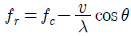
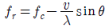
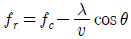
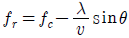
(정답률: 알수없음)
80. 다음 중 통신망을 구성하기 위한 준비단계에서 고려사항으로 중요성이 가장 낮은 것은?
- 통신망의 형태
- 선로의 종류
- 전원설비의 종류
- 통신망 프로토콜
(정답률: 알수없음)
5과목: 전자계산기 일반 및 무선설비기준
81. 부동 소수점 수가 기억장치 내에 있을 때, 비트를 필요로 하지 않는 것은?
- 부호(Sign)
- 지수(Exponent)
- 가수(Mantissa)
- 소수점(Point)
(정답률: 알수없음)
82. 다음 중 Self Complement Code는 무엇인가?
- 8421 Code
- Excess 3 Code
- Gray Code
- 5421 Code
(정답률: 알수없음)
83. SRAM의 용량이 1024byte 일 경우 필요한 어드레스선의 개수는 몇 개인가? (단, 데이터선의 8선이다.)
- 4
- 9
- 10
- 20
(정답률: 알수없음)
84. 다음 중 프로그램 카운터의 내용과 명령의 번지 부분을 더해서 유효 번지가 결정되는 주소 지정 방식은?
- 상대 번지 모드
- 직접 번지 모드
- 인덱스 번지 모드
- 베이스 레지스터 번지 모드
(정답률: 알수없음)
85. 다음 중 속도가 가장 빠른 장치는?
- 레이저프린터
- 라인프린터
- 자기디스크
- X-Y 플로터
(정답률: 알수없음)
86. 다음 중 순서도를 작성하는 목적이 아닌 것은?
- 코딩(coding)의 기초 자료가 된다.
- 프로그램의 개요를 타인이 쉽게 이해 할 수 있다.
- 에러의 수정이나 프로그램의 수정을 자동으로 할 수 있다.
- 전체적인 흐름을 쉽게 파악할 수 있다.
(정답률: 알수없음)
87. 다음 중 캐시 메모리를 사용하는 이류로 가장 타당한 것은?
- 기억 용량을 두 배 이상 증가시킬 수 있다.
- 주기억장치를 보조기억장치로 대치시킬 수 있다.
- 프로그램의 총 실행 시간을 단축시킬 수 있다.
- 평균 액세스 시간을 연장하기 위해 사용한다.
(정답률: 알수없음)
88. 하나의 컴퓨터에서 여러 개의 프로그램을 주기억 장치내에 기억시켜 놓고 동시에 실행하도록 하는 방식은?
- batch processing
- off-line processing
- multiprogramming
- multidata processing
(정답률: 알수없음)
89. 2진수의 1의 보수를 구하기 위해서 사용되는 게이트는?
- AND
- NOT
- OR
- EX-OR
(정답률: 알수없음)
90. 중앙처리장치(CPU)가 기억 장치에서 인스트럭션을 가져오는 것을 무엇이라 하는가?
- Interrupt cycle
- Fetch cycle
- Execute cycle
- Bus request cycle
(정답률: 알수없음)
91. 다음 중 의료용 전파응용설비의 안전시설의 조건에 적합하지 않은 것은?
- 고압전기에 의하여 충전되는 기구와 전선은 외부에서 용이하게 닿지 아니하도록 절연차폐체 또는 접지된 금속차폐 체내에 수용할 것
- 의료전극 및 그 도선과 발진기ㆍ출력회로ㆍ전력선 등 사이에서의 절연저항은 50볼트용 절연저항시험기에 의하여 측정하여 500메가옴 이하일 것
- 의료전극과 그 도선은 직접 인체에 닿지 아니하도록 양호한 절연체로 덮을 것
- 인체의 안전을 위하여 접지장치를 설치할 것
(정답률: 알수없음)
92. 유도식통신설비의 선로에 통하는 고주파전류의 기본파에 의한 누설전계강도는 그 송신장치로부터 1킬로미터 이상 떨어지고, 선로로부터의 거리가 기본주파수의 파장을 2π로 나눈 지점에서 얼마이어야 하는가?
- 50 μV/m 이하
- 100 μV/m 이하
- 200 μV/m 이하
- 500 μV/m 이하
(정답률: 알수없음)
93. 다음 중 공중선 전력에 주어진 방향에서의 반파다이폴의 상대이득을 곱한 것을 무엇이라 하는가?
- 공중선의 상대 이득
- 실효복사전력
- 공중선의 절대 이득
- 규격전력
(정답률: 알수없음)
94. 다음 중 정보통신기기 인증규칙에 적용되지 않는 것은?
- 형식승인을 얻어야 할 경우
- 전자파적합등록을 하여야 할 경우
- 형식검정을 받아야 할 경우
- 전자파흡수율 측정을 하여야 할 경우
(정답률: 알수없음)
95. 송신설비에서 발사되는 전파의 주파수 허용 편차를 나타내는데 필요로 하는 주파수대 구분으로 적합하지 않은 것은?
- 9kHz ~ 535kHz
- 1606.5kHz ~ 4000kHz
- 59.7MHz ~ 170MHz
- 470MHz ~ 2450MHz
(정답률: 알수없음)
96. 준공검사를 받은 후 운용하여야 하는 무선국은?
- 국가안보 또는 대통령 경호를 위하여 개설하는 무선국
- 공해 또는 극지역에 개설하는 무선국
- 외국에서 운용할 목적으로 개설한 육상이동지구국
- 도로관리를 위하여 개설하는 기지국
(정답률: 알수없음)
97. 다음 중 정보통신기기인증규칙에서 정보통신기기에 해당하지 않는 것은?
- 전파법의 규정에 의한 무선설비의 기기
- 전기통신기본법의 규정에 의한 전기통신기자재
- 전기사업법의 규정에 의한 형식승인을 얻은 전기용품
- 전파법의 규정에 의한 전자파로부터 영향을 받는 기기
(정답률: 알수없음)
98. 다음 ( )내에 알맞은 수치는 얼마인가?
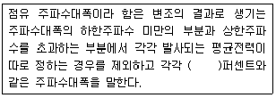
- 0.5
- 5
- 10
- 15
(정답률: 알수없음)
99. 공중선 전력의 표시방법 중 평균전력은?
- PX
- PZ
- PY
- PR
(정답률: 알수없음)
100. 다음 중 공중선계의 조건으로 충족하여야 할 사항이 아닌 것은?
- 공중선은 이득이 높을 것
- 정합은 신호의 반사손실이 최소화 되도록 할 것
- 지향성은 복사되는 전력이 목표하는 방향을 벗어나지 아니하도록 안정적일 것
- 내부 잡음은 낮은 신호입력에서도 적을 것
(정답률: 알수없음)